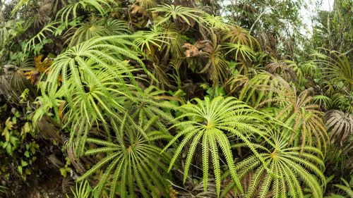

Matoniaceae
Matonia Fern Family
Matoniaceae is a small, relictual family of leptosporangiate ferns in the order Gleicheniales. It comprises only two extant genera, Matonia and Phanerosorus, restricted to the Malesian region (Southeast Asia, Borneo, New Guinea). These terrestrial ferns are known for their distinctive frond architecture – often umbrella-like or fan-shaped due to unique branching patterns – and their circular sori protected by prominent, centrally or laterally attached indusia (protective flaps), distinguishing them from the exindusiate condition in related families like Gleicheniaceae and Dipteridaceae.
Overview
Matoniaceae represents another ancient lineage within the Gleicheniales order, known from an extensive fossil record but now reduced to just two living genera and about four species. This restricted distribution in the humid forests and montane ridges of Malesia marks them as relictual survivors.
Like their relatives in Gleicheniales, they possess long-creeping rhizomes (covered in hairs or narrow scales) and belong to the leptosporangiate ferns. However, they are readily distinguished by two key features: their unique frond structures (pedately divided and umbrella-like in Matonia, pinnate with forking pinnae in Phanerosorus) and, crucially, the presence of conspicuous indusia covering their sori. These indusia are typically umbrella-shaped (peltate) or kidney-shaped (reniform) and firmly protect the cluster of relatively few, large sporangia within each sorus. This contrasts sharply with the naked (exindusiate) sori of Gleicheniaceae and Dipteridaceae.
Quick Facts
- Scientific Name: Matoniaceae
- Common Name: Matonia Fern Family
- Number of Genera: 2 (Matonia, Phanerosorus)
- Number of Species: Approximately 4
- Distribution: Restricted to Malesia (Malay Peninsula, Borneo, New Guinea, nearby islands)
- Evolutionary Group: Ferns (Division Pteridophyta / Monilophyta, Class Polypodiopsida, Subclass Polypodiidae, Order Gleicheniales, Type: Leptosporangiate)
Key Characteristics
Rhizome and Habit
Plants are terrestrial ferns with long-creeping rhizomes that are solenostelic (containing a vascular cylinder with leaf gaps). Rhizomes are densely covered with multicellular hairs or narrow, bristle-like scales. They typically grow on the ground in montane forests, often on ridges or slopes.
Fronds (Leaves)
Fronds possess distinctive and complex architectures. In Matonia, the long petiole divides at the apex, often pedately (like fingers from a palm) or dichotomously multiple times, with pinnately divided segments radiating outwards to form an umbrella-like or fan-like structure. In Phanerosorus, the frond is pinnately compound, but the pinnae fork dichotomously one or more times. Venation in the ultimate segments is typically free. Young fronds exhibit circinate vernation.
Reproductive Structures (Sori and Sporangia)
Reproduction is via spores produced in leptosporangia. The sporangia are grouped into round sori located on the abaxial (lower) surface of the frond segments, typically arranged in rows near the midvein.
A key diagnostic feature is that each sorus is protected by a conspicuous, persistent indusium. The indusium is typically round and either peltate (umbrella-shaped, attached by a central stalk) or reniform (kidney-shaped, attached at its sinus). Each sorus contains relatively few sporangia (approx. 6-20). The sporangia possess a complete, oblique annulus and mature simultaneously.
Spores are typically trilete and non-green. The gametophyte generation is surface-dwelling, green, and thalloid.
Field Identification
Identifying Matoniaceae involves recognizing their unique frond architecture (umbrella-like or pinnate with forking pinnae) combined with the presence of prominent, umbrella-shaped or kidney-shaped indusia covering the circular sori.
Primary Identification Features
- Unique Frond Architecture: Pedately/dichotomously divided umbrella-like fronds (Matonia) or pinnate fronds with dichotomously forking pinnae (Phanerosorus).
- Circular Sori with Prominent Indusium: Sori are round and each is covered by a distinct, often centrally attached (peltate) or kidney-shaped (reniform) indusium.
- Hairy/Narrowly Scaly Rhizome: Long-creeping rhizome covered with hairs or bristle-like scales.
- Restricted Malesian Distribution: Found only in specific Southeast Asian / Malesian regions.
Secondary Identification Features
- Montane Forest Habitat: Often found on ridges or slopes in mountain forests.
- Free Venation: Veins in ultimate segments are typically free.
- Relatively Few Sporangia per Sorus: Visible with magnification under the indusium.
Seasonal Identification Tips
- Year-Round Identification: The distinctive frond shape allows identification throughout the year.
- Fertile Fronds: Locating fertile fronds and observing the indusiate sori is crucial for confirmation and distinguishing from related exindusiate families.
Common Confusion Points
- Gleicheniaceae and Dipteridaceae: Also in Gleicheniales, may have complex branching, but their sori are exindusiate (lack indusia). Dipteridaceae also differs in having reticulate venation and bristly rhizomes.
- Cyatheaceae (Tree Ferns): Some tree ferns have large fronds, but their sori structure (often with cup-shaped or scale-like indusia, or exindusiate) and rhizome/trunk covering (typically broad scales) are different.
- Other Ferns with Peltate Indusia (e.g., some Dryopteridaceae): May have round sori with centrally attached indusia, but lack the characteristic frond architecture and Gleicheniales features.
Field Guide Quick Reference
Look For:
- Terrestrial fern with unique umbrella-like or forking-pinnate fronds
- Creeping rhizome with hairs/narrow scales
- Round sori on underside
- Prominent umbrella/kidney-shaped indusium covering each sorus
- Restricted Malesian distribution
- Montane forest habitat
Key Variations:
- Frond architecture (Matonia vs. Phanerosorus)
- Indusium attachment (peltate vs. reniform)
- Overall size
Notable Examples
The family comprises two extant genera.

Matonia R.Br. ex Wall.
(Genus; species include M. pectinata, M. foxworthyi)
Characterized by its striking umbrella-like fronds formed by pedate or repeated dichotomous branching from the petiole apex. Sori are protected by umbrella-shaped (peltate) indusia. Found in montane habitats in Malesia.

Phanerosorus Copel.
(Genus; species include P. sarmentosus, P. major)
Differs from Matonia in having pinnately compound fronds where the pinnae fork dichotomously. Sori are protected by kidney-shaped (reniform) indusia. Found on limestone or rocks in Borneo and New Guinea.
Phylogeny and Classification
Matoniaceae is a family within the order Gleicheniales, positioned alongside Gleicheniaceae and Dipteridaceae as part of an early diverging clade of leptosporangiate ferns (subclass Polypodiidae). This order is well-supported by molecular data and represents a distinct lineage with ancient origins, evidenced by a rich fossil record for the Matoniaceae dating back to the Mesozoic era.
The presence of prominent indusia in Matoniaceae, contrasting with the exindusiate condition in Gleicheniaceae and Dipteridaceae, highlights morphological diversity even among closely related families within this basal fern order. The family's current highly restricted distribution marks it as a relict group.
Position in Plant Phylogeny
- Kingdom: Plantae
- Division: Pteridophyta / Monilophyta (Ferns and Allies)
- Class: Polypodiopsida
- Subclass: Polypodiidae (Leptosporangiate Ferns)
- Order: Gleicheniales
- Family: Matoniaceae
Evolutionary Significance
Matoniaceae offers significant evolutionary perspectives:
- Relictual Lineage: Surviving members of a group with a much more extensive past distribution and diversity, providing a window into Mesozoic fern floras.
- Basal Leptosporangiate Position: Helps understand the early evolution of features within leptosporangiate ferns, including soral protection (indusia).
- Unique Morphologies: The complex and distinct frond architectures of Matonia and Phanerosorus demonstrate evolutionary experimentation in leaf form.
- Biogeographic History: Its restriction to Malesia reflects past geological and climatic changes affecting tropical floras.